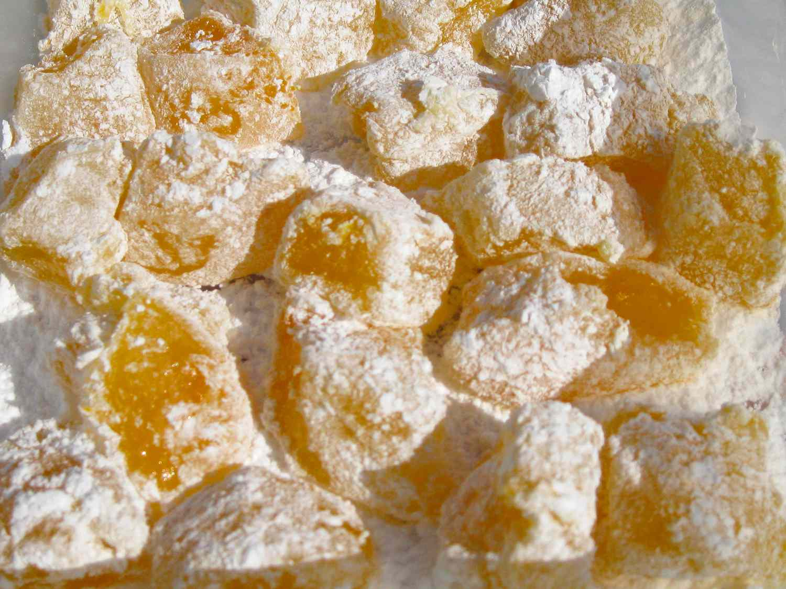

Turkish Delight

Description
This dessert is known by many people who have
read the book 'The Lion, The Witch, and The Wardrobe'.
This would do well for a tea party, a holiday party,
or even if you just wanted to surprise someone.
Ingredients
- 1 ½ cups water
- 3 cups granulated sugar
- 3 tablespoons light corn syrup
- ½ cup orange juice
- 3 tablespoons orange zest
- 3 (.25 ounce) envelopes unflavored gelatin
- ¾ cup cornstarch
- ½ cup cold water
- 1 tablespoon vanilla extract
- ¾ cup chopped pistachio nuts
- confectioners' sugar for dusting
Steps
-
Bring 1 1/2 cups water, sugar, and corn syrup
to a boil over medium-high heat in a large saucepan.
Cook, stirring frequently, until the temperature
reaches 240 degrees F (115 degrees C) on a candy
thermometer. Set aside and keep hot.
-
Stir together orange juice and orange zest,
sprinkle with gelatin, and set aside. In a small bowl,
dissolve cornstarch in 1/2 cup cold water,
then stir into hot syrup. Place over medium-low heat,
and simmer, stirring gently, until very thick.
-
Remove syrup from heat, stir in orange juice mixture,
vanilla, and pistachios. Sprinkle a 8x8-inch pan
generously with confectioners' sugar. Pour the
Turkish delight into the pan, and let cool in a cool,
dry place (not the refrigerator) until set, 3 to 4 hours.
-
When cool, sprinkle the top with another thick
layer of powdered sugar. Cut into 1-inch squares,
and dredge each well with confectioners' sugar.
Store at room temperature in an airtight container.
Home